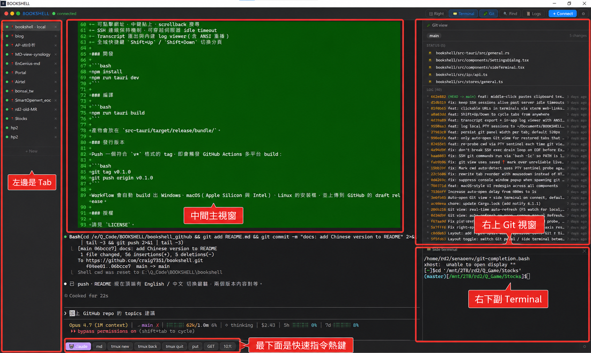
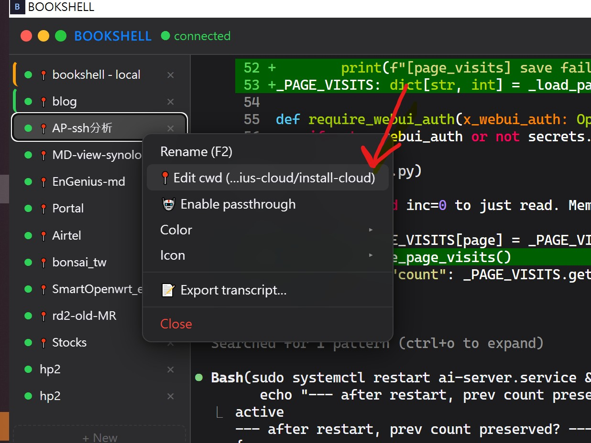
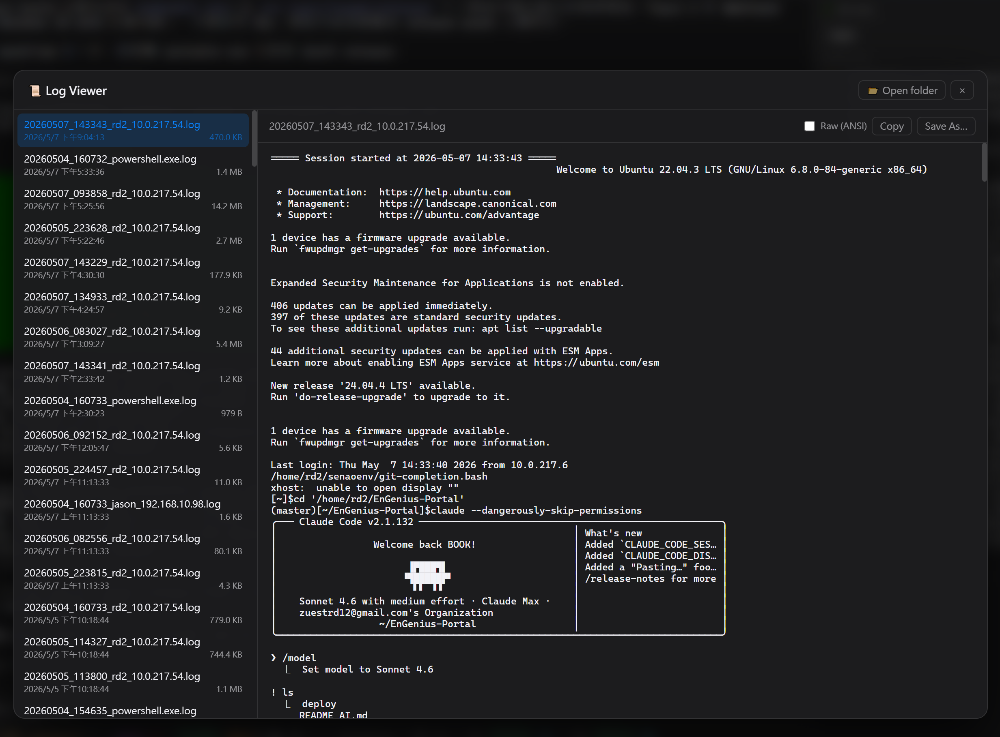
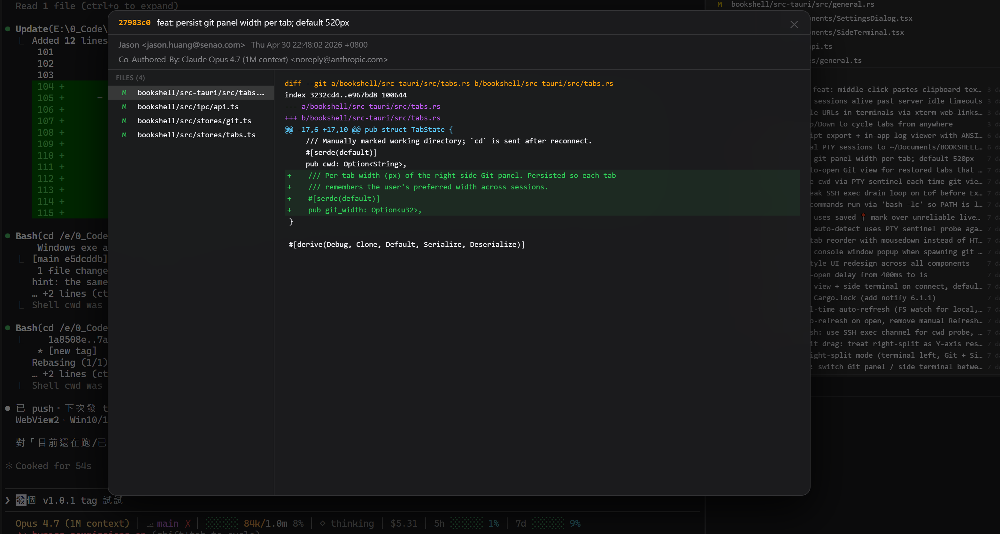

多分頁 SSH 與本機 shell、即時 Git 面板、共用工作目錄的副視窗終端，以及讓 AI 代理能完全接管鍵盤的 Passthrough 模式。原生桌面應用，輕量、快速、純 Rust 後端。

從「人和 AI 一起操作同一個 shell」的角度重新設計的終端機。
Ctrl+Shift+P 切換。開啟後幾乎所有快捷鍵直接送進遠端 shell，讓 AI 代理操控鍵盤時不會與 App 熱鍵打架。
每個分頁是一條 SSH 連線或本機 PTY，分頁狀態重開自動還原；存了密碼還會自動重連。
釘選分頁的 cwd，下次開啟自動 cd 回該資料夾。支援拖拉排序分頁。
右側顯示工作樹狀態、commit 圖與 diff；點 modified 檔案直接看變更，也能檢視特定 SHA 的內容。
共用同一條 SSH 連線開第二個終端。主視窗跑 AI agent 時，副視窗可同步下其他指令。
本機 tab 走檔案系統、SSH tab 走 SFTP。遠端檔案以串流方式下載（永不整檔進記憶體）。
把常用指令做成一鍵巨集，支援多行與送出確認，適合反覆執行的部署或測試流程。
拖放檔案自動帶入路徑；剪貼簿圖片 Ctrl+V 在 SSH tab 會自動上傳遠端再貼路徑。
SSH keep-alive 穿越伺服器 idle timeout；內建崩潰診斷日誌與 OOM 軌跡記錄。
一個視窗同時容納主終端、Git 變更、副視窗與快速指令列。
透過分頁右鍵設定 cwd，下次重開軟體會自動進入設定的資料夾。

自動記錄所有分頁的內容，包含與 AI agent 的對話，支援 ANSI 重播。

可直接檢視某個 commit SHA 內所修改的內容與逐檔 diff。

從 GitHub Releases 取得各平台安裝檔，皆由 GitHub Actions 自動編譯。
抓對應平台的安裝檔執行。Windows 也能直接用 portable .exe，免安裝。
建立 SSH 連線設定檔（主機、帳號、密碼），或選本機 shell。Ctrl+Shift+T 開新分頁。
需要讓 AI 控制鍵盤時，按 Ctrl+Shift+P 開啟 Passthrough，快捷鍵就會直通 shell。
v* 標籤即觸發 GitHub Actions，於 Windows／macOS／Linux 官方環境多平台 build，產物直接上傳 Release，過程公開可稽核。russh，不依賴系統 OpenSSH；前端絕不直接碰檔案系統或網路，一律透過嚴格的 Tauri IPC 邊界。提醒：目前連線密碼以明文儲存於本機設定檔；金鑰認證與密碼加密（DPAPI／keychain）為開發中項目。請在受信任的個人裝置上使用。